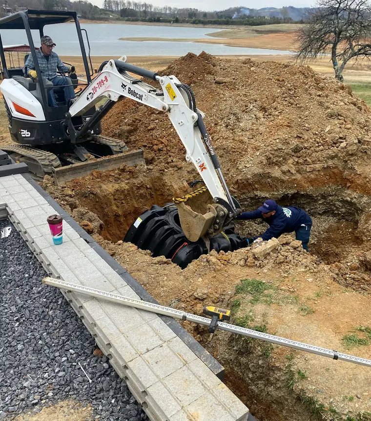
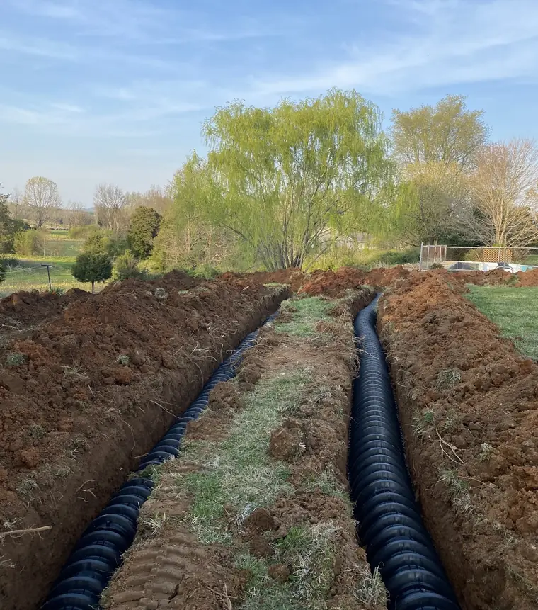
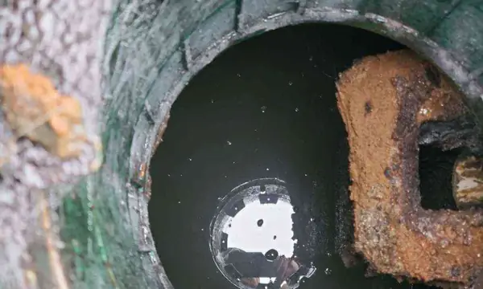
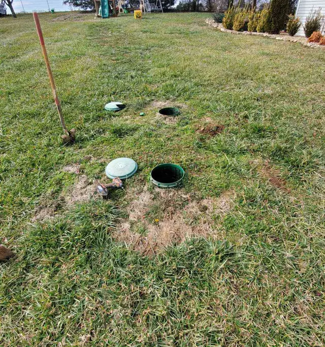

About Enviro Septic
A locally owned and operated, veteran owned septic company in Morristown, Tennessee, serving homes and businesses across seven counties.
In their words
“For the majority of the seven county area that Enviro Septic services, septic tanks are a necessity. If you are not familiar with septic systems, they can be a stress to handle and maintain.”
“Our mission is to provide the best, most effective and efficient septic service available. We believe in honesty, integrity and professionalism to give you the services that you deserve.”
From simple septic tank pumping to inspections, septic repairs and complex installations, one call covers it, so you don’t have to call several people.
“Awesome review!!! thank you! The majority of us are veterans. We will always take care of our own!”
The owner, replying to a Google review
Customers already know Randy, Kris, Morgan, Michael and Matt by name from their reviews. A group photo with the service truck and the tanker would put faces to them.
Names you’ll hear
These come straight from their Google reviews.
- Randy: “Randy is wonderful to speak with” (Marissa King, Google)
- Kris: “Kris was very nice and communicated well through out the process.” (Jennifer McMaster, Google)
- Morgan and Kris: “knowledgeable and efficient and pleasant to interact with.” (Miranda Hamilton, Google)
- Michael: “He found the septic tank lid with minimal digging.” (Bill O’Connor, Google)
- Matt: “Matt arrived on time and finished the job quickly and efficiently.” (Terry Vos, Google)
Where they work
- Hamblen County: home base, Morristown
- Jefferson County
- Cocke County
- Grainger County
- Greene County
- Hawkins County
- Sevier County
8 AM to 8 PM, and emergency service 24/7. (423) 473-7842
On the job

A new tank going in.

Field lines.

Outlet baffle, from an inspection.

Risers opened for an inspection.